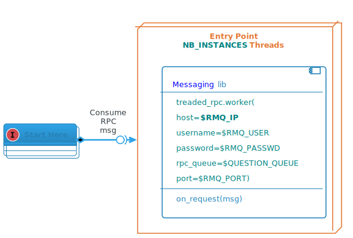

<!DOCTYPE html>
<html>
<head>
	<meta charset="utf-8" />
	<meta name="viewport" content="width=device-width, initial-scale=1.0, maximum-scale=1.0, user-scalable=no">
	<title>Find Reply</title>
	<link rel="stylesheet" href="../assets/css/reveal/reveal.css">
	<link rel="stylesheet" href="../assets/css/reveal/theme/mmtt.css">
	<link rel="stylesheet" href="../assets/css/highlight-hybrid.css">
	<link rel="stylesheet" href="../assets/css/slideshow.css">
	<style>
	.reveal .slides::after {
		background-image: url("../images/mmtt.png");
		background-repeat: no-repeat;
		content: "";
		height: 100px;
		left: 15px;
		position: absolute;
		right: 15px;
		top: 0;

		background-position: right;
	}
	</style>
	<!-- mmtt -->
</head>
<body>
	<div class="reveal">
		<div class="slides">
			<section data-markdown
			data-separator="(^#HSLIDE$|^#HSLIDE\?.*)"
			data-separator-vertical="(^#VSLIDE$|^#VSLIDE\?.*)"
			data-separator-notes="^Presentation note:"
			data-charset="utf-8">
			<script type="text/template">
				# Find Reply Module
#HSLIDE

## Architecture Overview
#HSLIDE

##  


#HSLIDE

## Attributes

- Aggregate content from different sources
- Most of its time spent in waiting a reply from those sources
- Must use mutlithreading to serve RPC requests from RASA to optimize performances

#HSLIDE

## Docker Configuration
#VSLIDE

### ENVIRONMENT VARIABLES

- <u>Mandatory</u>
 - **RMQ_IP**: RabbitMQ broker FQN or IP  
 - **QUESTIONS_QUEUE**: Questions from RASA  (Ex: tbott-rpc_.dom.proj_)
- <u>Optional</u>
 - **NB_INSTANCES**: number of allocated threads  
  ► limits the number of questions in parallel  
  ► defines service level capacities (dimensioning rule)  
  ► default =  *5*  
 - RMQ_USER: ...
 - RMQ_PASSWD: ...
 - ENCODER_QUEUE: *tbott-encoder*  (Bert encoder queue)
 - MATCHING_QUEUE: *tbott-matching* (Sentence matching queue)
 - RMQ_PORT: *5672*
 - LOG_LEVEL: *INFO*  

#VSLIDE

### VOLUMES

- logs: mounted in /var/log/supervisor

#HSLIDE

## Communications
*most of the code can be picked from the previous version of Maestro*  
   

#VSLIDE

### Two type of requests
To be compatible with the existing  


- &quot;question&quot; : questions coming from *RASA*
- &quot;analyse_sentence&quot; : From *Analyser*  
 - can be implemented in a second or third stage ~ not mandatory ~  
 - reuse codes from the previous Maestro version  
 - needs to generate a list of questions with one and two words missings  
 - number of free threads must be set to 0, or heavily decreased, to save resources

#VSLIDE

#### code trails
Line _51_ of ai_worker.py:

```python
self.worker = Worker(ip, user, passwd, channel, self.handle_message)
```
Line _57_ of ai_worker.py:

```python
def handle_message(self, msg):
  """
    Callback to handle messages
  """
  LOGGER.debug('Received: %s', msg)
  try:
    request = json.loads(msg)
    if request['type'] == "question":
      full_answer = self.find_reply(request)
      return json.dumps(full_answer)
    elif request['type'] == "analyse_sentence":
      full_answer = self.analyse_sentence(request['content'], request['categories'], request['reference'])
      return json.dumps(full_answer)

...
```
#VSLIDE

#### Step 1: contexts
*NB: only if message is a &quot;question&quot; (ie comes from RASA)*


1. get all possible categories (or contexts) from Admin.
 - request:
```json
 { "request": "get_contexts", , "tag": "prev_tag", "content": "cat1"}
```
  - **tag**: the tag given in the previous request&#39;s result.  
Set to *None* if it doesn&#39;t exist.  
  - **content**: optional. It can be used to filter categories if one is provided in the question. You can omit it if not needed.
 - reply:
```json
 { 
 "request": "get_contexts",
 "result":  {
     "tag": "update_tag",
     "dictionary": ["word_a: word_b", "word_x: word_y"],
     "contexts": [{"cat1": [{"cat1": "DDAY"}]},  
                          {"cat1_cat2": [{"cat1": "D-DAY", "cat2": "Bilan"},  
                                         {"cat1": "D-DAY", "cat2": "Cimetières"}]}
                         ]
 }
```
  - **tag**: a tag to track updates. If the *tag* in the request in equal to the last update *tag* then **dictionary** and **contexts** wil be empty and previous *dictionary* and *contexts* should be used.
  - **dictionary**: a dictionary to pass to **wordtools**
  - **contexts**: list of all contexts
1. extend question list with all *possible* contexts  
 - The list of questions must be preprocessed with the library **wordtools** 4.0 or higher:  ```python
 from wordtools import Document
 ...
 doc = Document('', dictionary=dictionary)
 processed = []
 for q in questions:
   doc.text = q
   doc.clean()
   doc.apply_dictionary()
   if auto_correct:
     doc.auto_correct()
   processed.append(doc.text)
```

#VSLIDE

#### Step 2: vectors
Send question list to rabbitMQ $ENCODER_QUEUE using the *Messaging* library.

Request example:

```python
{ 
  "request": "encode",
  "content": ["original_question", "extended_question1", "..."]
}
```
Reply example:

```python
{ 
  "result": [numpy.array, numpy.array, numpy.array]
}
```
#VSLIDE

#### Step 3 : candidates
Get possible candidates from **FAISS** module (127.0.0.1:14000)  

Search request example:  

```python
{ "requests" : ["search"],
  "search" : [numpy.array , numpy.array]
} 
```
FAISS reply example:  

```python
{ "result" : numpy.array }
```
#VSLIDE

####  
The **FAISS** module send back a matrix of size **2 x nb_questions x nb_results** :


-  2 : IDs and scores (in this order)
- nb_questions: number of questions sent to FAISS
- nb_results: number of results per question (*top k results*)

#VSLIDE

####  
If the question comes from RASA (ie message type = &quot;question&quot;), then all the questions are derivated from the original question.  
Which means that the results must be consolidated into only one list of IDs.  
This shouldbe done via **Numpy** as python&#39;s loops are quite time consuming.

Code snippet:

```python
res = search_faiss(q_vectors)
I = res[0]
S = res[1]
NQ = I.shape[0]              # Number of questions
K = I.shape[1]               # Number of results per question
I_ = np.reshape(I, NQ * K)   # reshape matrice into a list
S_ = np.reshape(S, NQ * K)   # idem
res_ids = np.argsort(S_)     # indexes of the sorted scores
#first occurence of each result
_, i = np.unique(I_[res_ids], return_index=True)
I_ = I_[i]                   # keep uniq ids
S_ = S_[i]                   # Keep uniq scores
final_idx = np.argsort(S_)   # Indexes of the sorted scores
final_idx = final_idx[:K]     # Keep only the K first results
final_ids = I_[final_idx]
final_scores = S_[final_idx]
return final_ids, final_scores
```
#VSLIDE

#### Step 4 : Questions to match

1. Get from **Admin** questions and replies associated to the list of candidates IDs.  
 - request:```json
 { "request": "get_candidates",
   "content": [1, 2, 3]}
```
 - reply:```json
 { 
 "request": "get_candidates",
 "result":  [{"id": 1, "ref": "DDAY/dday/20", 
              "question": "Quelles sont les plages du débarquement ?", 
              "augmented": false, 
              "reply": "Les 5 plages du débarquement sont ...", 
              "cat1": "D-DAY", "cat2": "Lieux de Batailles"}, 
             {"id": 2, "ref": "DDAY/dday/20", 
              "question": "D-DAY, Quelles sont les plages du débarquement ?", 
              "augmented": true, 
              "reply": "Les 5 plages du débarquement sont ...", 
              "cat1": "D-DAY", "cat2": "Lieux de Batailles"},
             {"id": 3, "ref": "DDAY/dday/20", 
              "question": "D-DAY, Lieux de Batailles, Quelles sont les plages du débarquement ?", 
              "augmented": true, 
              "reply": "Les 5 plages du débarquement sont ...", "cat1": "D-DAY", "cat2": "Lieux de Batailles"}
             ]}
```
1. Build a list of paired questions.
 - Augmented questions must be paired only with questions from the same categories/contexts

#VSLIDE

#### Step 5 : Best match
Starting with **LaBSE** encoder, cosine similartiry measures (provided by FAISS module) can be directly used as a matching score if:


- score is &gt;= 0.90 for a question with more than 6 words
- score is &gt;= 0.75 for a question with less than 7 words

> *This shortcut will improve latencies without sacrifying accuracy.*


1. Send the list of questions pairs to rabbitMQ $MATCHING_QUEUE using the *Messaging* library.
1. Build the final reply with the best match and other candidates
 - chuncks of previous version of Maestro can be reused to speed up devs

#HSLIDE

## Testing procedure
<TABLE>
  <TR>
    <TD style="vertical-align: top">
      <ul>
        <li>**&quot;backdoor&quot;** to test question directly from admin consol</li>
        <li>Uses **Messaging** lib</li>
        <li>**Internal** communication only (Admin)</li>
      </ul>
    </TD>
    <TD style="width:55%"></TD>
  </TR>
</TABLE>

			</script>
		</section>
	</div>
</div>

<script src="../assets/js/reveal/reveal.js"></script>
<script src="../assets/js/reveal/lib/head.min.js"></script>
<script src="../assets/js/jquery.js"></script>
<script>
Reveal.initialize({
	embedded: true,
	margin: 0.0,
	showNotes: false,
	transition: 'convex',
	autoSlide: 0,
	loop: false,
	center: true,
	rtl: false,
	shuffle: false,
	mouseWheel: false,
	history: true,

	// disabled for now
	// math: {
	// 	mathjax: 'https://cdn.mathjax.org/mathjax/latest/MathJax.js',
	// 	config: 'TeX-AMS_HTML-full'
	// },

	dependencies: [
		{ src: "../assets/js/reveal/plugin/markdown/marked.js"},
		{ src: "../assets/js/reveal/plugin/markdown/markdown.js"},
		{ src: "../assets/js/reveal/plugin/notes/notes.js"},
		// { src: "../assets/js/reveal/plugin/math/math.js", async: true }
		{ src: "../assets/js/reveal/plugin/highlight/highlight.js", async: true, callback: function() { hljs.initHighlightingOnLoad(); } }
	]
});

Reveal.configure({
	keyboard: {
		67: function() { // bind "s" key to "select" code block content

		var currentSlide = Reveal.getCurrentSlide();
		var preBlock = $(currentSlide).find("pre");

		if(preBlock.length > 0) {

			if (window.getSelection) {
				var range = document.createRange();
				range.selectNodeContents(preBlock[0]);
				var selection = window.getSelection();
				selection.removeAllRanges();
				selection.addRange(range);
			}
		}
	}
}
});

</script>

</body>
</html>
